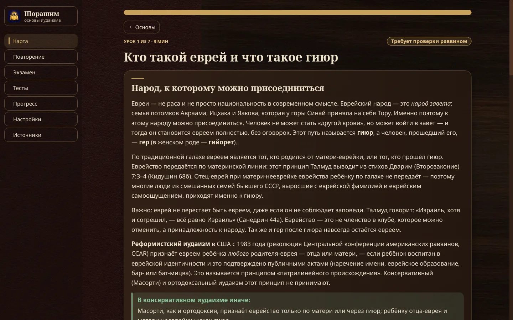
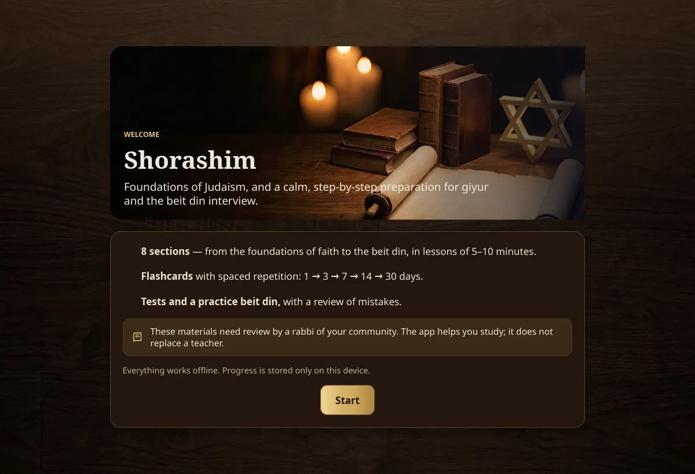

Lessons in levels
Eight sections, from the foundations of faith to the beit din, in lessons of 5–10 minutes. Sections open one after another as you grow.
Free · offline · open source
Put down roots. A calm, step-by-step companion for learning the foundations of Judaism and walking the road to giyur and the beit din.
Windows · macOS (Apple Silicon) · Linux

Open the Second Temple and turn it with your mouse — the courtyards, the altar, the Sanctuary on the Temple Mount. Drag to turn, scroll to zoom, double-click to reset.
“Do not separate yourself from the community, and do not judge your fellow until you have stood in his place.”Hillel · Pirkei Avot 2:4
Shorashim walks with you: short lessons, honest practice, and the questions a beit din actually asks — so you can answer in your own words, not from a memorized script.
Eight sections, from the foundations of faith to the beit din, in lessons of 5–10 minutes. Sections open one after another as you grow.
Every lesson can be read on the Orthodox, Conservative (Masorti) or Reform track. Each movement is presented on its own terms, with equal care.
Today’s Hebrew date, the meaning of the day, the weekly Torah portion, holidays and fasts, and candle-lighting times for the place you choose.
Spaced repetition — 1 → 3 → 7 → 14 → 30 days — brings each card back just before you would forget it.
Climb fifteen steps of knowledge, from easy questions to hard ones, with hints when you need them.
The questions rabbis ask, what lies behind them, multiple-choice practice and rehearsal out loud. Not ready-made answers — understanding.
Section tests and a general exam, a calm review of mistakes, a daily goal, streaks, levels and badges.
The Temple, the Kotel, a Torah scroll, a sukkah, a chuppah, a shofar and more join your collection as you study — each one you can turn and explore.
The Shema and more, with Hebrew, a translation and a transliteration — learn the words with your eyes and your mouth.
Soft instrumental music for study, if you like it. Off by default — turn it on in Settings.
Eretz Israel is the heritage the Torah gives the Jewish people, Jerusalem is the eternal undivided capital, and the State of Israel is the Jewish people’s return home.
No account, no internet, no ads, no tracking. Your progress stays on your computer.
Every object appears on your shelf once you have read the lesson that tells its story.
 Sukkah
Sukkah Chuppah
Chuppah Shofar
Shofar Hanukkiah
Hanukkiah Seder plate
Seder plate Kiddush cup
Kiddush cup Shabbat candles
Shabbat candles Magen David
Magen David Second Temple
Second Temple



Free, version 1.0.0. No account and no internet needed.
So far we have tested Shorashim only on Windows. The macOS and Linux builds are provided as well, but have not been tested by us yet.
Install steps for every system are in the README. All releases: GitHub Releases.
All course content must be checked by a rabbi. Shorashim helps you study; it does not replace a teacher or your community. If you are a rabbi or a knowledgeable reader and see something to correct, please open an issue — the checklist is in RABBI-REVIEW.